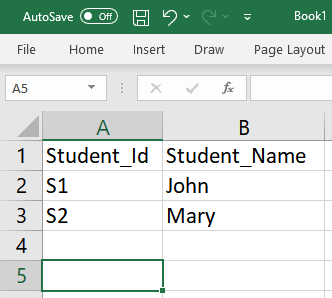

Learn Web
Strings and iterations in JS
User input
HTML forms let users make choices (radio buttons, drop down etc.) or enter text:
handlings strings with JS
Remember: JS uses the browser memory as it were a spreadsheet:


Strings
a string is a sequence of characters (not just letters) from the keyboard
they are delimited by quotes
strings are indexed: the i-th character of a string is accessed with the square brackets notation
we count from 0
String concatenation
easy to assemble longer strings from pieces
iteration
a block of code can be repeated for a certain number of times
main case: apply the same operation to all elements of a sequence
example: take che characters of a string and make them uppercase (wow -> WOW)
the for instruction iterates an arbitrary block of code
assign i to 0
execute the block
check whether the condition (i<n) is still true
if yes, increment i by 1 (i++) and go back to executing the block
Printing char by char
Let’s unroll it
The JS interpreter moves on to the next instruction below
Methods
a method is a function that is associated to a JS object, e.g., variables
a method is called with the dot notation
prefer methods to writing our own functions
most activities are already implemented in methods
String slicing
with charAt() an individual character of a string can be copied or changed
with slice() a substring can be copied
Capitalization
chaining methods
arrays
A variable that contains more than value, thanks to indexing
Corresponds to spreadsheet columns or rows
normally, values are homogenous
Splitting strings
Very useful to go from a long string of text to an array of words: later we will iterate it with a for cycle
What is the expected output?